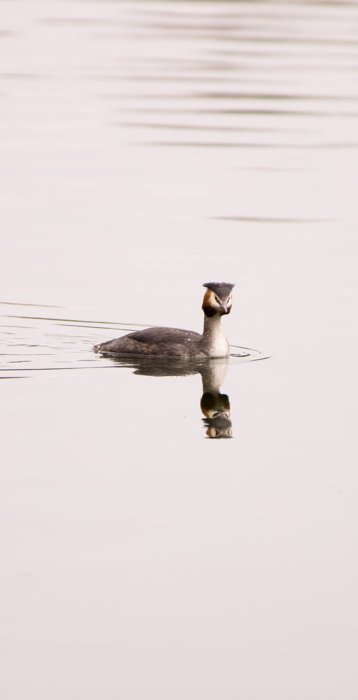

Recent Photography
Recent photographs and visual studies.
A rotating collection of images focused on atmosphere, geometry, and movement from recent shoots.
Gallery
Recent Photographs





Recent Photography
A rotating collection of images focused on atmosphere, geometry, and movement from recent shoots.
Gallery